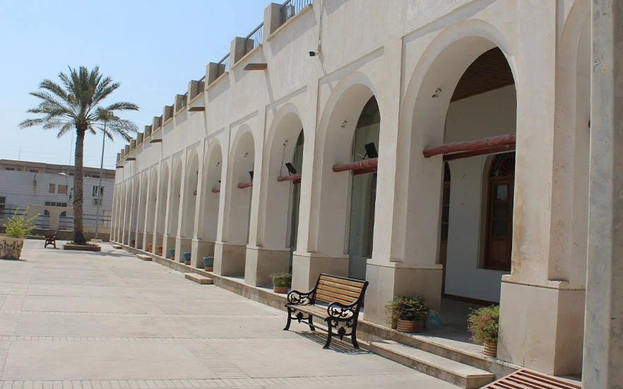

مدرسه سعادت با کارنامهای درخشان به عنوان پنجمین مدرسه ماندگار کشور شناخته میشود. این مدرسه به لحاظ تاریخی به عنوان مادر مدارس جنوب ایران به شمار میآید و از لحاظ گردشگری یکی از مهمترین جاهای دیدنی بوشهر است. معماری زیبا و خیرهکننده این مدرسه، به صورت هماهنگ با بافت مرکزی شهر بوشهر طراحی شده و توجه هر بازدیدکنندهای را جلب میکند. مدرسه سعادت، ابتدا توسط احمدخان دریابیگی تاسیس و با گذر زمان به مرکز فرهنگی تاریخی تبدیل شد. این مدرسه در حال حاضر دارای دو بخش مخصوص دانشآموزان و بخش تاریخی فرهنگی است. بازدیدکنندگان میتوانند از بخش تاریخی مدرسه بازدید کنند و اتاقهایی با عکسهای دانشآموزان و مفاخر را مشاهده کنند. گالری هنری سعادت در بخش تاریخی فرهنگی قرار گرفته که از این قسمت میتوانید محصولات بومی جذابی را بخرید. آدرس: بوشهر، میدان معلم، خیابان امام، مدرسه تاریخی سعادت
